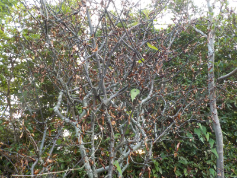
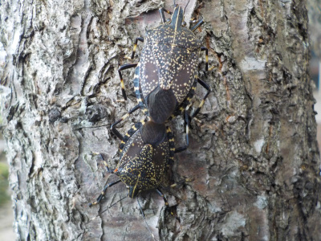
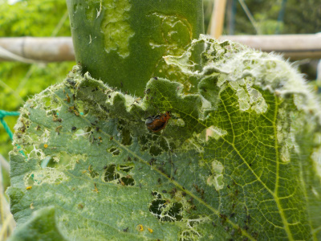
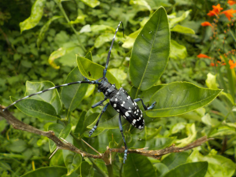
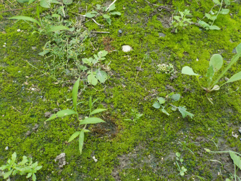
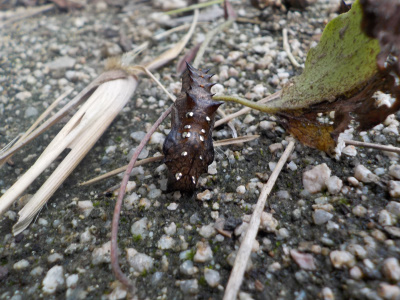

遊びで植物を育てよう
2019/07/28
木が枯れてた。
原因不明です。

挿し木で増やすしておけばよかったと後悔。
他に１本しかない木はなかったかな。
【7月TOP】
【日記TOP】
【園芸TOP】
2019/07/28
大きいカメムシがいました。
杏子にカメムシが何匹かいました。

最初気付かなかったですが、飛ぶと羽音が大きいので、何?って見たらカメムシでした。
建物に侵入するカメムシとは違う種類かな。
【7月TOP】
【日記TOP】
【園芸TOP】
2019/07/28
キュウリがウリハムシに食べられまくっています。
このキュウリのツルはそろそろ終わりなのであきらめています。

葉っぱも実も沢山食べられました。
今年はキュウリを沢山食べ続けているので、もうしばらくは出来なくていいかな。
【7月TOP】
【日記TOP】
【園芸TOP】
2019/07/21
カミキリに逃げられました。
ノロノロとみかんの木を登っていました。
捕まえようとしたら逃げられました。

手でつまもうなんて思ったらダメですね。
はたき落すとか、にぎるくらいの勢いが必要だなと思いました。軍手してればよかった。
【7月TOP】
【日記TOP】
【園芸TOP】
2019/07/21
ジメジメしているので苔が生えました。
梅雨なのでジメジメしてあたりまえです。

地面に苔が生えてちょっとワイルドになってます。
もうちょっとしたら梅雨があけて、カラカラに乾燥しちゃうんだろうな。
【7月TOP】
【日記TOP】
【園芸TOP】
2019/07/21
金色に光っているサナギがいました。
表面黒いんですが、足っぽいところが金色のサナギがいました。

なんだかドクドクしい。
毒蛾にでもなりそうな感じがしました。
でも調べたらツマグロヒョウモンって綺麗な蝶になるようです。
幼虫は花壇の植物を食べるみたいですね。ちょっとやっかいですね。
【7月TOP】
【日記TOP】
【園芸TOP】
過去の日記
【2024年7月の日記】
【2023年7月の日記】
【2022年7月の日記】
【2021年7月の日記】
【2020年7月の日記】
【2019年7月の日記】
【2018年7月の日記】
【2017年7月の日記】
【2016年7月の日記】
【2015年7月の日記】
【2014年7月の日記】
【2013年7月の日記】
【2012年7月の日記】
【7月TOP】
【日記TOP】
【園芸TOP】
熱中症に注意しましょう。
【おいしいものを食べよう。】【たくさん寝よう。】
【ソロ活をしよう!】【季節感のあることをしよう。】【動画視聴はほどほどに。】【当サイトの全てのコンテンツは無断転載禁止です。】